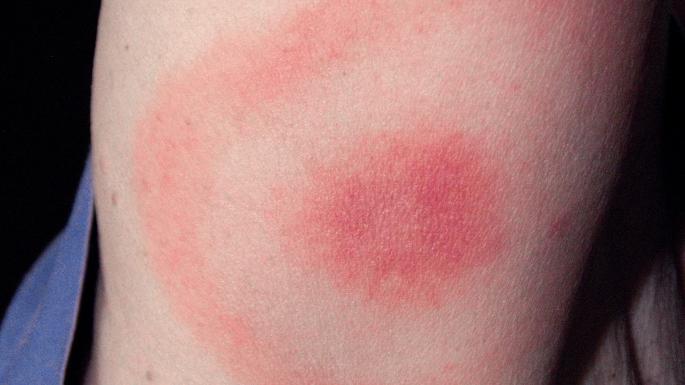
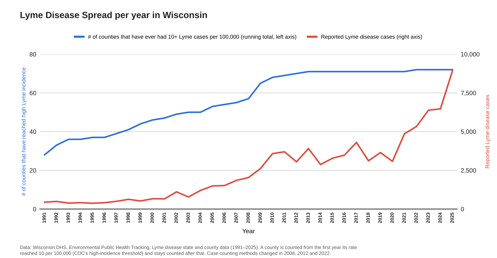
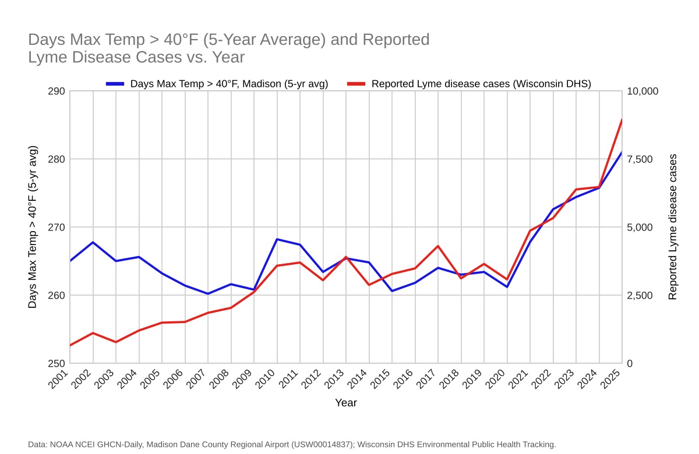
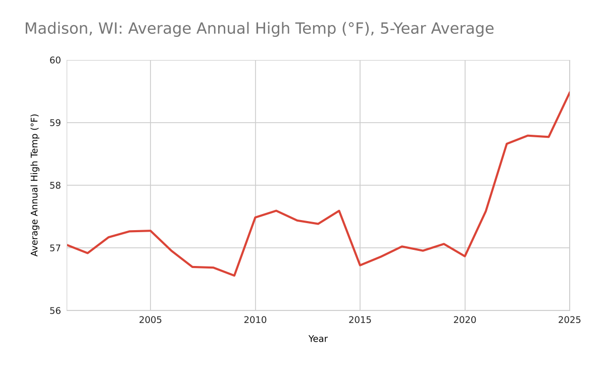
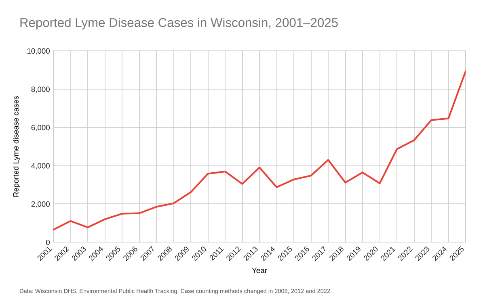

Lyme disease has quietly become a Wisconsin problem. Today, according to CDC data, Wisconsin is among the top 10 states in the U.S. for reported Lyme cases. This is a serious issue, and the numbers are still rising.
We want you to know how to protect yourself and your loved ones, recognize the signs of infection, and seek medical care quickly if needed. By staying informed, you can stay safe and get the right help before a small tick bite turns into a bigger problem.
Lyme disease is a zoonotic disease, meaning it spreads from animals to humans. It is caused by the bacterium Borrelia burgdorferi and is spread by infected blacklegged ticks, often called deer ticks.

Lyme disease comes from the bite of a blacklegged tick. Ticks pick up the Lyme bacteria when they bite white-footed mice. Deer can also carry many ticks, but they do not get sick themselves because their immune systems manage the bacteria differently.
Once a tick is infected, it can pass the bacteria to a person during a blood meal. The good news is that Lyme disease cannot spread from one person to another.
Over the last 25 years, Lyme disease has steadily spread across Wisconsin. It expanded from high levels in 47 counties in 2001 to all 72 counties by 2022.

Warmer weather is part of the story. As temperatures rise, ticks can remain active for longer periods each year. That means more opportunities for exposure.


Reported cases have risen dramatically in the state over time. Lyme disease has moved from a relatively localized problem to a statewide concern.

If you find a tick, remove it as soon as possible with fine-tipped tweezers.
Lyme disease is serious and it is becoming more common in Wisconsin due to a combination of warmer weather, more ticks, and improved detection. But you can reduce your risk by checking for ticks promptly and staying informed.
Stay safe by avoiding tall grass, checking for ticks whenever possible, and spreading awareness about Lyme disease.